dialysis-slot-rebuild-columns PASS 1.0
grade table_goldintent transformdomain healthcaredifficulty d5ambiguity a3voice terseapps libreoffice_calc + files + terminalbatch wave2-main-s1
Rebuild this schedule: drop any slot whose Machine is OFFLINE, sort remaining slots by Shift A-Z then Patient A-Z, add a Minutes column (End minus Start, in minutes) as the last column, and hide the Notes column.
task config + evaluator
{
"config": [
{
"type": "execute",
"parameters": {
"command": "mkdir -p '/home/user/Desktop' && rm -f '/tmp/__fixture.b64' && printf %s 'UEsDBBQACAgIAFRnHF0AAAAAAAAAAAAAAAALAAAAX3JlbHMvLnJlbHOtks9qwzAMh+99CqN747SFMUacXsqgtzK6B9BsJTGJ/2BrW/b2M2OwdZSwwY6Wf/r0IdTsZzeJF0rZBq9gU9UgyOtgrO8VPJ7v17ewb1fNA03IJZIHG7MoPT4rGJjjnZRZD+QwVyGSLz9dSA65PFMvI+oRe5Lbur6R6TsD2gumOBoF6Wg2IM5vkX7DDl1nNR2Cfnbk+cqIH4lCxtQTK5gn+RrS+BTCWBUoyOsu27+6mAUXR4wGGaUOidYxFUhiS/nLqnSfSjl/JJa8dv+5I5qZvCGzrIQxfhqtGnlxC+07UEsHCGu/dgTfAAAAQgIAAFBLAwQUAAgICABUZxxdAAAAAAAAAAAAAAAADwAAAHhsL3dvcmtib29rLnhtbI1TyW7bMBC99ysE3m0tTlTHsBy4coQE6BLEaXIsKGlksaZIgRxvLfrvHVFWkqI99CCJs/DNm5mn+fWxkd4ejBVaJSwcB8wDVehSqE3Cvj5moynzLHJVcqkVJOwEll0v3s0P2mxzrbce3Vc2YTViO/N9W9TQcDvWLSiKVNo0HMk0G9+2BnhpawBspB8FQew3XCjWI8zM/2DoqhIFrHSxa0BhD2JAciT2thatZYt5JSQ89Q15vG0/84Zop1wWzF+80L43Xs6L7a7NKDthFZcWqNFaH77k36FA6ohLybySI6S6aalCLqTA05D7B5ZGukL1yNk5ngQc7Gu8Mx30rTbih1bI5bowWsqEodmdyxJjFMW/IutuYo88t4Pz+CxUqQ8Jo12d3pwP7vgsSqxpk/FkejH4bkFsakzYNLyKmIc8f+gmlrA4oGuVMBZdEYfCqZM9UL3Ooob8Nx255Q1fT7nJloLLkxX2m5UabUeZYnclMXDCQUrZCytySczNTFDA3JWRQx7gqO2CFiIQjBv3ThGVsONmoPqkS4JYEto5/rKts70CiZzIjoMg7GDhiB8tuu9ZWlLT+S95SZEb6AXltMW8nREJ+/k+juJ0GkejaBlORmF4czn6MLm4HGU3WUYDTFfpVfaLdOZQZ/SkPX2Lhn6aB6jWJ1rxsdfc0lHyKat/O2b+oIzFb1BLBwgv4D6CBAIAAH8DAABQSwMEFAAICAgAVGccXQAAAAAAAAAAAAAAAA0AAAB4bC9zdHlsZXMueG1s7Vhdb5swFH3fr7D8vkLSJG0noOtaZdrLVC3pNGnagwsGvPoD2U4b+utrYyCQpJ2UTVoi5cm+1/ece7i+FobgcskoeMRSEcFDODjxIcA8FgnhWQjv5tP35xAojXiCqOA4hCVW8DJ6FyhdUjzLMdbAMHAVwlzr4oPnqTjHDKkTUWBuVlIhGdLGlJmnColRoiyIUW/o+xOPIcJhFPAFmzKtQCwWXIdw2LqAG74kRttkBIGjuxaJkfIZcywRhd7W4HE/+KMN8+o8UZAKvko3gs4RBeoZPCJq4H7Fihh29g3+jb4vwAxxZRdSxAgt3dKwInbwt0muJHFqu3B/b+DVYEtDKO3thHVEQYG0xpJPjQHq+bwsTGW56QtHU8X9ITqTqBwMxx1ANZi890Impg+bzAPYuEBCUCY4ondFCFNEFYat60Y88cYZBRSn2hBLkuV21KLwLInWgplJg7GpHXM7MeljTOnMNvWPdPX0viFdpptNyCvDnBWrvZ46ptpARUHLqbAkWi5w7fhUhfRcV5RknOG1wFspNI51dSYrdxSgJhDkQpJnQ203MKvPgD3CmsTW5Z4XAo2X+pvQyLEYTU8SFXPjbItIeFIlNmsql4Q/zMWUtMumTEUrA1ARP+CkEZmTxEA7kd4yXauUv6rTYNc61TrXC9V1dyvVtMHhiBkexbwiZuezdRRzFHMUcxRzFLOLmNHpPr0pR4O9UjPaKzXDfVJz8Z/FeN3ru7vMd+/xu17jl+mm8q6ev5R+aHf6+qt6p7L9uw0/gKp5dQN2PivbZpzAjhfYD/QQfrV/KmincPcLQjXhzvI2AdeCMdTED8Y9wOmrAPDT/9WCJj3QZCtoISXmcdliznqY0VuYXq7zHu5sG+4Wy9jsQQu56EHcD4NVMY2x+gMVvQBQSwcIWnRMH6UCAADGEgAAUEsDBBQACAgIAFRnHF0AAAAAAAAAAAAAAAAYAAAAeGwvd29ya3NoZWV0cy9zaGVldDEueG1svVnbcts2EH3vV3D4kKdGvOuSSMokktV0xokzVS4zfYNJyEJNEgwASra/vgBIUdQCqtOZRH6wxMXhnsXZBQmspm8eitzZYcYJLWduMPBdB5cpzUh5N3O/fF69HLsOF6jMUE5LPHMfMXffzH+b7im751uMhSMdlHzmboWoXnkeT7e4QHxAK1zKkQ1lBRLykt15vGIYZfqmIvdC3x96BSKl23h4xX7EB91sSIqXNK0LXIrGCcM5EjJ8viUVP3h7yH7IX8bQXk71EE8vxGUz0vkLYsNfQVJGOd2IQUqLNjRzlhNvcjLPIv2RwArE7uvqpXRcycndkpyIRx2jO59q55+YsyG5wOwDzWReNijnWI5V6A6vsfhS6XHxmX6ShsOwN5967c3zaUakhCrtDsObmfs2eLUKIgXRiK8E73nvu8O3dL+SAdY54gd/2vgHI9k1KbG0Cla3xr/ofkHz91IJWVr9gb+xlOxgYORuK0O8xhvRuRTodo1znAqc9e+7qUUuSdaPxS3NOwcZ3qA6FyoESUfZwb6TEc/cUumZS5e0UhQLnOdqnq6TKuyf0v8wdp0nSot1inKpUuD7veuP+nZoVXpeo0daa1mkCzmoFsMtpffKotz6Kkl6EkreCqmF0wbhOkhad/gYzPG6udXh39uEHPOlHPe/HzKz0hUjU90KIUX4RjKxVUEP/HHoR0GYdDLJpLzHSnI5HA7kwn6SyThYWvlpo/M13uFc4nVAfZtkaObnnQQwn0pNuf6v1M1RxVX+WqdpzQUt2siaDG1JluHSSqs5C/Qgo5SfpNSfXDyqDCmxGzfjwSRUAv1cxrBlDC2MwXAQJT+fMmopIwvlaDD5BYxxyxhbGJNB8AsYk5YxsTKOfgHjsGUc2hIZDiaxXlxN0TbPeyTQfMro3mG64Bripr47ruPSAUE06P9YS5rfmJ6ctaJTjwGuEfJmLq27uT/1dirAFvHORASniIWJCE8RSxMRnSKuTER8iliZiKRDeFK9TsLwwhKGRmBDIKGJGAEJTcQYSNgggh5iAiQ0EQHI5cqkCQK7iNGFRYzMyEARvbNAQBUtLBBQRsvIVCkBQlogIKMrC9HILmR8YSHj54W0QEC1LSwQUG7L2FApBOV2ZUIMIU2i8ExFJhcWMjEjg0JaILAiLRBYkYkpJKxICwQKaSE6U5HDCws5fPb5aCJCWJAmxFjZQ1Mk+Ig0IRF8RJpE0ZmCHF1Yx9HzK9uERACysEBAzS5HpkpA6ysTAmt2ZSE688IeX1jI8fMr24REoGgXFgh4qy/HppCgrq8sEFC0K5Mo9u1CTi4s5OTZlW0iYrh7tEDg9nFiiBTD/aMJMTY/FqLYrmPgX3oX7j9fkhZMDNbcwoIxHpMt5kRNkLYrCwZWpS2cMy+c4OKHGsuZxZDTcuKALx0bBm6DWkxfqgTug2yYAOppOd+EZ/S89AknMM8NZnmamARuhmwYozzNY0wCt0MWjFGeFqrhGTkvfdYJzNMDfG5aIAk8M9ow8NQYmGcZuCeyQBJDTUvE8B3k9ZoZFSOluKl0b9zZYqSa+sfe7d2xbwstayy6Zgtl5ImWAuULXArMeq2ZHWaCpOaA13ShPyB2RyRxrru7/mA0HiVty/d4KWilf3VIwlH3JzN9S4VMrW1kq1vKRwcbSkXv2us64HXlVKjCbE2esH4n816PV3fGD53S9rJrjbqOcnHDNE9G9+XnLS5v5GxldTEiJ6t/bZi5FWWCISJkuDlK79+W2bctEV2z3ckY6vW1U5znC1qony24ak2XWPEyLlRD+WNd3OKm71RzvIJmmIplRWZupCZyyMHRktKKYF1JUotGrZXWyMnIZiPzVArt/xjmwXyTZVe74/qaT2mWNR38+QtUVK8X+v+L7zUVr5f4H/S1dtaYkc3v7yi9b8waEYT64+3UOzpQvpow/q8vpYOjv3/SDlsvU68/N3nZ/SA1/xdQSwcI/5B/QLoFAADUGgAAUEsDBBQACAgIAFRnHF0AAAAAAAAAAAAAAAAaAAAAeGwvX3JlbHMvd29ya2Jvb2sueG1sLnJlbHOtkU1rwzAMhu/9FUb3xUkHY4w4vYxBr/34AcZR4tDENpLWtf9+LhtbCmXs0JPQ1/O+SPXqNI3qiMRDDAaqogSFwcV2CL2B/e7t4RlWzaLe4Gglj7AfEqu8E9iAF0kvWrPzOFkuYsKQO12kyUpOqdfJuoPtUS/L8knTnAHNFVOtWwO0bitQu3PC/7Bj1w0OX6N7nzDIDQnNch6RM9FSj2LgKy8yB/Rt+eU95T8iHdgjyq+Dn1I2dwnVX2Ye73oLbwnbrVB+7Pwk8/K3mUWtr97dfAJQSwcIT/D5etIAAAAlAgAAUEsDBBQACAgIAFRnHF0AAAAAAAAAAAAAAAAUAAAAeGwvc2hhcmVkU3RyaW5ncy54bWyNVk1T2zAQvfdXaHwH26EkwCRhgJK2U74GaHve2JtYE1lyd+UY8+sr4NRL5x3jPGk/3tO+nZ+/tM7sWdQGv8jKwyIz7KtQW79dZD+fVwcnmdFIviYXPC+ykTU7X36aq0aTjnpdZE2M3Vmea9VwS3oYOvbpn02QlmL6KdtcO2GqtWGOrcsnRTHNW7I+M1XofVxksxSk9/ZPz1cfH6ZltpyrXc7fg5xpR1WKnW5Rlj1ny6fGbuI8j8t5/ob6D/KBomWPYW+paqxnCPsUSbBbr30N4e5CZMVu3LNP/IA1SdWruR/ZUY2VdntQTiBgOTsrCgg5KVHkxmrsHRnHm2hIWizjIHBDHsSOZB5p2/SeYkMeOnW/Wt18v7uGsAXclhJui2eu1UQhr10AhXfhyJvfjY1VaNco9cVntMYjLHMXBqNpnvStWad+Y5lvIosPAePmC3kyP8JArnodd2idM4yhCczlFEVWqQ2cCoTAl0xR7Iu5Cw6UaglTk14liLSawsdkEUZCwN7kVWNray78SH7oUVKwuVOcoK3eCqUxInbb4MPkhpOcfpEmN3pF8z5FxQT2uzxGkRsryYmV9c3AoRPPIbn0q/kqtA6D7izqCSWWOcxNLaMZ+J2aWbnDhvdjHxtz4WpOuwX4Go7QfGggG5OLGB2ow3YAant2ZsUibIVQsRxjIp/CYilQJJO40XS22vVYhd8+RuuaRtIGVUpxgjIDpp2S4NaSEd5bHjC/1orEXLJsNQo4sZLGMfObwA1vQstvrm3/XU/ytD0v/wJQSwcI5S3hcEkCAAB7CwAAUEsDBBQACAgIAFRnHF0AAAAAAAAAAAAAAAARAAAAZG9jUHJvcHMvY29yZS54bWxtkc1OwzAQhO88ReR74gQkhKIklThwohJSqcTV2NvUxX+yt0379jgJNUXktjP7eWzvNquzVtkJfJDWtKQqSpKB4VZI07dk+/6SP5EsIDOCKWugJRcIZNXdNdzV3Hp489aBRwkhi0Em1Ny1ZI/oakoD34NmoYiEic2d9ZphlL6njvEv1gO9L8tHqgGZYMjoGJi7lEh+IgVPke7o1RQgOAUFGgwGWhUV/WURvA6LB6bODaklXhwsotdmos9BJnAYhmJ4mND4/op+rF8301dzacZRcSBdI3jNPTC0vmvorYi1gMC9dBhHPjf/GFErZvpjnE8HJt9uJiRZ4+QVC7iOO9pJEM+XmLHgRcvDSY577cqJSHK8Ihw/D8Bxvj+JWKNEBbN9Lf/tuvsGUEsHCC3LjJQnAQAANwIAAFBLAwQUAAgICABUZxxdAAAAAAAAAAAAAAAAEAAAAGRvY1Byb3BzL2FwcC54bWydkE1vwjAMhu/7FVXEtU0oGyCUBm2adkLaDh3arcoSFzLlS0mKyr9fAA04zyf7tfXYful6NLo4QIjK2QZNK4IKsMJJZXcN+mzfyiUqYuJWcu0sNOgIEa3ZA/0IzkNICmKRCTY2aJ+SX2EcxR4Mj1Vu29zpXTA85TLssOt7JeDVicGATbgmZI5hTGAlyNJfgehCXB3Sf6HSidN9cdsefeYx2oLxmidgFN/S1iWuW2WAkSxfC/rsvVaCp+wI26jvAO/nFXhRzapFVU82yg5j97Wcd/PH4m6gyy/8gEh4RiYvg9KyrCm+h53I24vVbPpUkRzngT+N4pur7BdQSwcIGec16vkAAACaAQAAUEsDBBQACAgIAFRnHF0AAAAAAAAAAAAAAAATAAAAW0NvbnRlbnRfVHlwZXNdLnhtbL1UO0/DMBDe+ysiryh2y4AQStqBxwiVKDMy8SUxjR+y3dL+e84pVFUJKYiIybLvvpdPdjbbqCZZg/PS6JxM6JgkoAsjpK5y8rS4Sy/JbDrKFlsLPsFe7XNSh2CvGPNFDYp7aixorJTGKR5w6ypmebHkFbDz8fiCFUYH0CENkYNMsxso+aoJye0Gj3e6CCfJ9a4vSuWEW9vIggcss1hlnTgHje8BrrU4cpd+OKOIbHt8La0/+17B6upIQKqYLJ53I14tdEPaAmIe8LqdFJDMuQv3XGEDe45JGB04T5fSpmFvxi1fjFnS/mvvUDNlKQsQplgphFBvHXDha4CgGtquVHGpT+j7sG3AD63ekv4geQvwrF0mA5vY85/wsRv34Rz+afS+5g7EY3D4vgefwCF3nw/Ez52xHn8GB7838Zk7olOLROCC7B/9XhGp/5wa4lsXIL5qjzLWfpTTd1BLBwiP9uU2WQEAAFcFAABQSwECFAAUAAgICABUZxxda792BN8AAABCAgAACwAAAAAAAAAAAAAAAAAAAAAAX3JlbHMvLnJlbHNQSwECFAAUAAgICABUZxxdL+A+ggQCAAB/AwAADwAAAAAAAAAAAAAAAAAYAQAAeGwvd29ya2Jvb2sueG1sUEsBAhQAFAAICAgAVGccXVp0TB+lAgAAxhIAAA0AAAAAAAAAAAAAAAAAWQMAAHhsL3N0eWxlcy54bWxQSwECFAAUAAgICABUZxxd/5B/QLoFAADUGgAAGAAAAAAAAAAAAAAAAAA5BgAAeGwvd29ya3NoZWV0cy9zaGVldDEueG1sUEsBAhQAFAAICAgAVGccXU/w+XrSAAAAJQIAABoAAAAAAAAAAAAAAAAAOQwAAHhsL19yZWxzL3dvcmtib29rLnhtbC5yZWxzUEsBAhQAFAAICAgAVGccXeUt4XBJAgAAewsAABQAAAAAAAAAAAAAAAAAUw0AAHhsL3NoYXJlZFN0cmluZ3MueG1sUEsBAhQAFAAICAgAVGccXS3LjJQnAQAANwIAABEAAAAAAAAAAAAAAAAA3g8AAGRvY1Byb3BzL2NvcmUueG1sUEsBAhQAFAAICAgAVGccXRnnNer5AAAAmgEAABAAAAAAAAAAAAAAAAAARBEAAGRvY1Byb3BzL2FwcC54bWxQSwECFAAUAAgICABUZxxdj/blNlkBAABXBQAAEwAAAAAAAAAAAAAAAAB7EgAAW0NvbnRlbnRfVHlwZXNdLnhtbFBLBQYAAAAACQAJAD8CAAAVFAAAAAA=' >> '/tmp/__fixture.b64' && base64 -d '/tmp/__fixture.b64' > '/home/user/Desktop/dialysis_slots.xlsx'",
"shell": true
}
},
{
"type": "open",
"parameters": {
"path": "/home/user/Desktop/dialysis_slots.xlsx"
}
}
],
"evaluator": {
"func": "compare_table",
"result": {
"type": "vm_file",
"path": "/home/user/Desktop/dialysis_slots.xlsx",
"dest": "dialysis-slot-rebuild-columns-result.xlsx"
},
"expected": {
"type": "cloud_file",
"path": "http://127.0.0.1:8021/wave2-main-s1/files/dialysis-slot-rebuild-columns/gold/dialysis_slots.xlsx",
"dest": "dialysis-slot-rebuild-columns-gold-beb78dfc.xlsx"
},
"options": {
"rules": [
{
"type": "sheet_data",
"sheet_idx0": "RI0",
"sheet_idx1": "EI0"
},
{
"type": "col_props",
"sheet_idx0": "RI0",
"sheet_idx1": "EI0",
"props": [
"hidden"
]
}
]
},
"postconfig": [
{
"type": "activate_window",
"parameters": {
"window_name": "dialysis_slots.xlsx - LibreOffice Calc",
"strict": true
}
},
{
"type": "sleep",
"parameters": {
"seconds": 0.5
}
},
{
"type": "execute",
"parameters": {
"command": [
"python",
"-c",
"import pyautogui; pyautogui.hotkey(\"ctrl\", \"s\");"
]
}
},
{
"type": "sleep",
"parameters": {
"seconds": 0.5
}
}
]
}
}
step 1 09:44:27
THINKINGLet me understand the task. I have a spreadsheet with columns: Shift(A), Patient(B), Machine(C), Start(D), End(E), Notes(F).
Task requirements:
1. Drop any slot whose Machine is OFFLINE (rows 3, 6, 10)
2. Sort remaining slots by Shift A-Z then Patient A-Z
3. Add a Minutes column (End minus Start, in minutes) as the last column
4. Hide the Notes column
First let me look at the data more carefully. Let me examine the current state.
Rows:
1: header - Shift, Patient, Machine, Start, End, Notes
2: Evening, Marcus Oyelade, M-12, 17:00, 21:00, fistula left arm
3: Morning, Priya Raghunathan, OFFLINE, 07:00, 11:00, needs transport
4: Morning, Alan Whitcombe, M-04, 07:30, 11:00, low sodium bath
5: Afternoon, Dana Kowalczyk, M-07, 12:00, 16:00, catheter
6: Evening, Beatrix Nolan, OFFLINE, 17:30, 21:30, isolation room
7: Morning, Chidi Anyanwu, M-02, 08:00, 12:00, graft right arm
8: Afternoon, Lena Vasquez, M-09, 12:30, 15:30, first session
9: Evening, Tomasz Grabowski, M-11, 18:00, 21:00, dry weight 71kg
10: Afternoon, Ruth Alderman, OFFLINE, 13:00, 17:00, awaiting swap
11: Morning, Samuel Ferreira, M-05, 06:30, 10:30, early pickup
12: Afternoon, Hana Kobayashi, M-08, 13:30, 17:00, anaemia review
13: Evening, Oscar Bergstrom, M-14, 17:00, 20:30, home training
OFFLINE rows: 3 (Priya), 6 (Beatrix), 10 (Ruth) — drop these.
Remaining rows (9):
- Evening, Marcus Oyelade, M-12, 17:00, 21:00
- Morning, Alan Whitcombe, M-04, 07:30, 11:00
- Afternoon, Dana Kowalczyk, M-07, 12:00, 16:00
- Morning, Chidi Anyanwu, M-02, 08:00, 12:00
- Afternoon, Lena Vasquez, M-09, 12:30, 15:30
- Evening, Tomasz Grabowski, M-11, 18:00, 21:00
- Morning, Samuel Ferreira, M-05, 06:30, 10:30
- Afternoon, Hana Kobayashi, M-08, 13:30, 17:00
- Evening, Oscar Bergstrom, M-14, 17:00, 20:30
Sort by Shift A-Z: Afternoon, Evening, Morning (alphabetical)
Then Patient A-Z within each shift.
Afternoon patients: Dana Kowalczyk, Lena Vasquez, Hana Kobayashi
- Dana Kowalczyk
- Hana Kobayashi
- Lena Vasquez
Evening patients: Marcus Oyelade, Tomasz Grabowski, Oscar Bergstrom
- Marcus Oyelade
- Oscar Bergstrom
- Tomasz Grabowski
Morning patients: Alan Whitcombe, Chidi Anyanwu, Samuel Ferreira
- Alan Whitcombe
- Chidi Anyanwu
- Samuel Ferreira
Final order:
1. Afternoon, Dana Kowalczyk, M-07, 12:00, 16:00, catheter, Minutes=240
2. Afternoon, Hana Kobayashi, M-08, 13:30, 17:00, anaemia review, Minutes=210
3. Afternoon, Lena Vasquez, M-09, 12:30, 15:30, first session, Minutes=180
4. Evening, Marcus Oyelade, M-12, 17:00, 21:00, fistula left arm, Minutes=240
5. Evening, Oscar Bergstrom, M-14, 17:00, 20:30, home training, Minutes=210
6. Evening, Tomasz Grabowski, M-11, 18:00, 21:00, dry weight 71kg, Minutes=180
7. Morning, Alan Whitcombe, M-04, 07:30, 11:00, low sodium bath, Minutes=210
8. Morning, Chidi Anyanwu, M-02, 08:00, 12:00, graft right arm, Minutes=240
9. Morning, Samuel Ferreira, M-05, 06:30, 10:30, early pickup, Minutes=240
Minutes calculation:
- Dana: 12:00 to 16:00 = 4h = 240
- Hana: 13:30 to 17:00 = 3.5h = 210
- Lena: 12:30 to 15:30 = 3h = 180
- Marcus: 17:00 to 21:00 = 4h = 240
- Oscar: 17:00 to 20:30 = 3.5h = 210
- Tomasz: 18:00 to 21:00 = 3h = 180
- Alan: 07:30 to 11:00 = 3.5h = 210
- Chidi: 08:00 to 12:00 = 4h = 240
- Samuel: 06:30 to 10:30 = 4h = 240
Now, the best approach here. The Start and End columns appear to be times. I need to add a Minutes column = End - Start in minutes. In LibreOffice, (End-Start) gives a fraction of a day. To get minutes, multiply by 24*60 = 1440. So formula =(E2-D2)*1440.
However, I need to be careful — I should compute the actual minutes value. Let me use a formula approach. But actually the safest is to rebuild the whole data.
Let me think about the cleanest approach. Rather than doing complex operations, I can:
1. First delete the OFFLINE rows.
2. Sort.
3. Add Minutes column with formula.
4. Hide Notes column.
Let me do this step by step in the GUI.
Approach for deletion: I'll select rows 3, 6, 10 (the OFFLINE ones) — but note that after deleting a row, row numbers shift. Let me delete from bottom to top to avoid shifting issues: delete row 10 first, then row 6, then row 3.
Actually, let me reconsider. Deleting rows then sorting. Let me plan.
Actually, a cleaner method: I could just rewrite the entire data area. But that's error-prone with times. Let me use the GUI operations.
Let me start by deleting the OFFLINE rows. I'll right-click the row header.
Step 1: Delete row 10 (Ruth Alderman, OFFLINE). Right-click on row number 10.
Let me take a screenshot first to confirm current state — I already have it. Let me proceed.
Actually, I'll delete rows bottom-up: 10, 6, 3.
Let me right-click row 10 header (the "10" label at x≈59, y≈311).
After deleting, the rows will shift. Let me do one at a time and take screenshots.
Actually, I can select multiple non-adjacent rows by Ctrl+clicking row headers, then delete. Let me select row 10, Ctrl+click row 6, Ctrl+click row 3, then right-click → Delete Rows. That's efficient.
Row 3 y≈234, Row 6 y≈265, Row 10 y≈311. Row header x≈59.
Let me click row 3 header, then ctrl+click row 6 and row 10.
Then right-click → Delete Rows.
After that, data will be in rows 2-10 (9 rows).
Then I need to sort. I'll select the data range A1:F10 and use Data → Sort. Sort by Shift (col A) then Patient (col B). But the Minutes column isn't there yet. I could sort before adding Minutes. That's fine since Minutes will be added as last column after sorting.
Actually wait — if I add Minutes column after sorting, the Notes column F is the last column, and Minutes would go in column G. But the task says "add a Minutes column as the last column". Notes is column F. If I add Minutes in G, then Notes is no longer the last column but it will be hidden anyway. That's fine — Minutes is the last column (G), Notes (F) hidden.
Hmm, but "last column" - should Minutes be after Notes? Yes, column G. That makes it the last column. Good.
Let me proceed:
1. Delete OFFLINE rows.
2. Sort by Shift then Patient.
3. Add Minutes header in G1 and formulas in G2:G10.
4. Hide Notes column (F).
For sorting, I need to make sure the sort includes headers. Let me select A1:F10 first, then Data→Sort, check "Range contains column labels".
Let me start.
Actually, for sorting, an easier robust approach: select the data range and use the standard sort dialog. Let me do it.
Let me begin with deleting rows. First click row 3 header.
ACTIONI'll start by examining the data, then delete the OFFLINE rows. Let me select the three OFFLINE rows (3, 6, 10) by clicking their row headers with Ctrl.
TOOL CALL<tool_call>
<function=computer_use>
<parameter=action>
left_click
</parameter>
<parameter=coordinate>
[45, 324]
</parameter>
</function>
</tool_call>
EXECUTED (pyautogui in VM)pyautogui.click(86, 350)
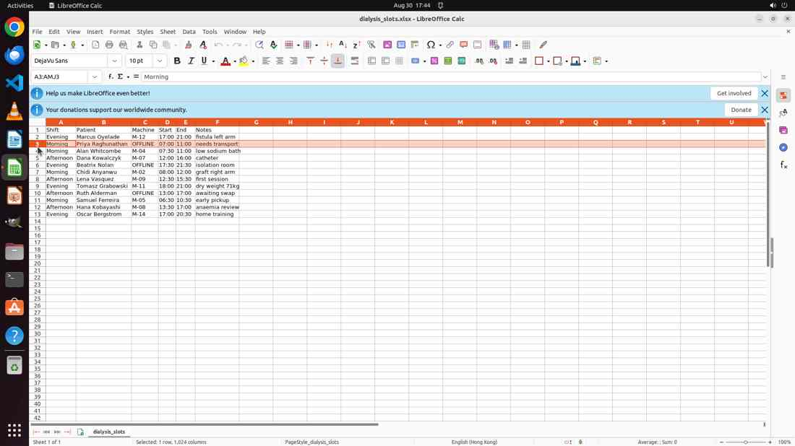
step 2.1 09:44:37
THINKINGRow 3 is selected. Now Ctrl+click rows 6 and 10.
ACTIONRow 3 is selected. Now I'll Ctrl+click rows 6 and 10 to add them to the selection.
TOOL CALL<tool_call>
<function=computer_use>
<parameter=action>
key_down
</parameter>
<parameter=keys>
["ctrl"]
</parameter>
</function>
</tool_call>
<tool_call>
<function=computer_use>
<parameter=action>
left_click
</parameter>
<parameter=coordinate>
[45, 366]
</parameter>
</function>
</tool_call>
<tool_call>
<function=computer_use>
<parameter=action>
key_up
</parameter>
<parameter=keys>
["ctrl"]
</parameter>
</function>
</tool_call>
EXECUTED (pyautogui in VM)pyautogui.keyDown("ctrl")

step 2.2 09:44:40
EXECUTED (pyautogui in VM)pyautogui.click(86, 395)

step 2.3 09:44:43
EXECUTED (pyautogui in VM)pyautogui.keyUp("ctrl")
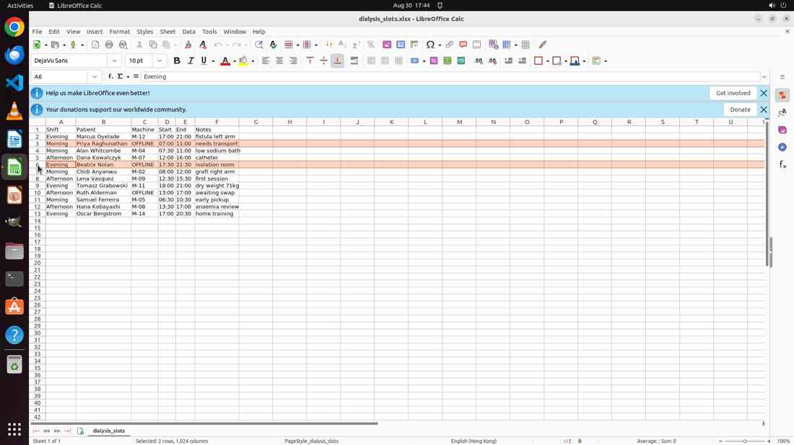
step 3.1 09:44:54
THINKINGRows 3 and 6 selected (2 rows). Now Ctrl+click row 10.
ACTIONRows 3 and 6 selected. Now Ctrl+click row 10.
TOOL CALL<tool_call>
<function=computer_use>
<parameter=action>
key_down
</parameter>
<parameter=keys>
["ctrl"]
</parameter>
</function>
</tool_call>
<tool_call>
<function=computer_use>
<parameter=action>
left_click
</parameter>
<parameter=coordinate>
[45, 431]
</parameter>
</function>
</tool_call>
<tool_call>
<function=computer_use>
<parameter=action>
key_up
</parameter>
<parameter=keys>
["ctrl"]
</parameter>
</function>
</tool_call>
EXECUTED (pyautogui in VM)pyautogui.keyDown("ctrl")

step 3.2 09:44:57
EXECUTED (pyautogui in VM)pyautogui.click(86, 465)

step 3.3 09:45:00
EXECUTED (pyautogui in VM)pyautogui.keyUp("ctrl")
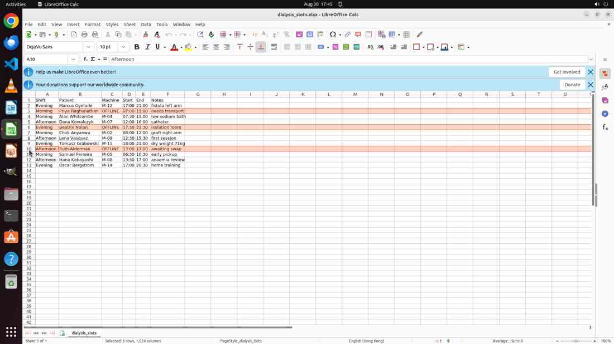
step 4 09:45:06
THINKING3 rows selected (rows 3, 6, 10 — the OFFLINE rows). Now right-click on a row header to get context menu → Delete Rows.
ACTIONAll three OFFLINE rows are selected. Now I'll right-click to delete them.
TOOL CALL<tool_call>
<function=computer_use>
<parameter=action>
right_click
</parameter>
<parameter=coordinate>
[45, 366]
</parameter>
</function>
</tool_call>
EXECUTED (pyautogui in VM)pyautogui.rightClick(86, 395)
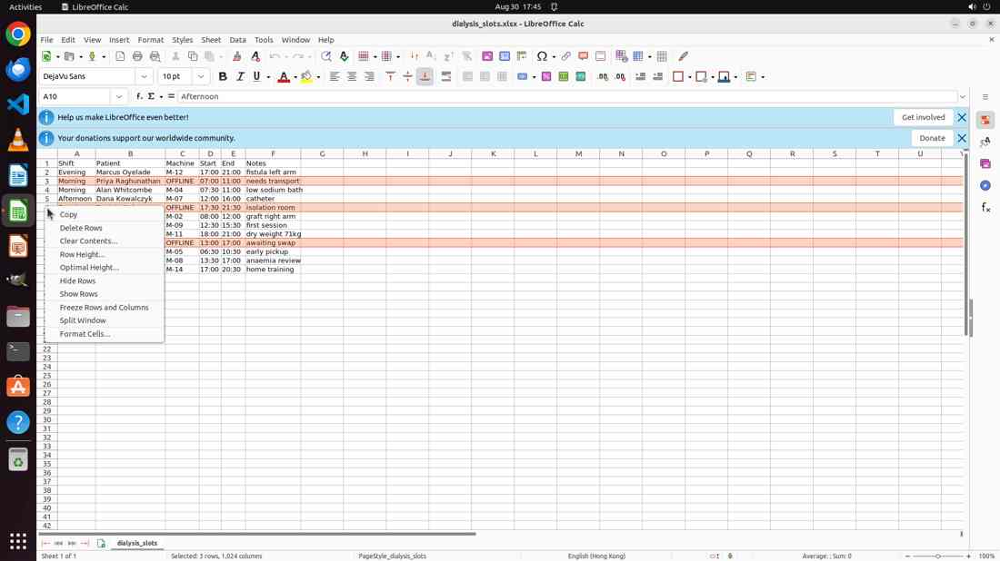
step 5 09:45:17
THINKINGContext menu is open. I'll click "Delete Rows".
TOOL CALL<tool_call>
<function=computer_use>
<parameter=action>
left_click
</parameter>
<parameter=coordinate>
[80, 402]
</parameter>
</function>
</tool_call>
EXECUTED (pyautogui in VM)pyautogui.click(153, 434)
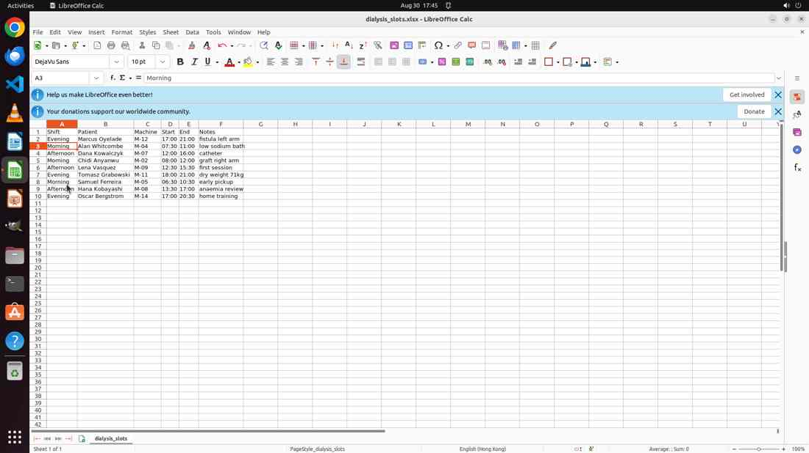
step 6 09:45:26
THINKINGOFFLINE rows deleted. Now the data is:
Row 1: header
Row 2: Evening, Marcus Oyelade, M-12
Row 3: Morning, Alan Whitcombe, M-04
Row 4: Afternoon, Dana Kowalczyk, M-07
Row 5: Morning, Chidi Anyanwu, M-02
Row 6: Afternoon, Lena Vasquez, M-09
Row 7: Evening, Tomasz Grabowski, M-11
Row 8: Morning, Samuel Ferreira, M-05
Row 9: Afternoon, Hana Kobayashi, M-08
Row 10: Evening, Oscar Bergstrom, M-14
Now I need to sort by Shift (A) then Patient (B). Let me select the range A1:F10 first, then Data → Sort.
Let me select A1 to F10. Click A1, then shift+click F10. Actually let me use the Name Box to type the range. Click Name Box, type A1:F10, Enter.
ACTIONThe OFFLINE rows are removed. Now I'll select the data range A1:F10 via the Name Box, then open the Sort dialog.
TOOL CALL<tool_call>
<function=computer_use>
<parameter=action>
left_click
</parameter>
<parameter=coordinate>
[75, 170]
</parameter>
</function>
</tool_call>
EXECUTED (pyautogui in VM)pyautogui.click(144, 183)
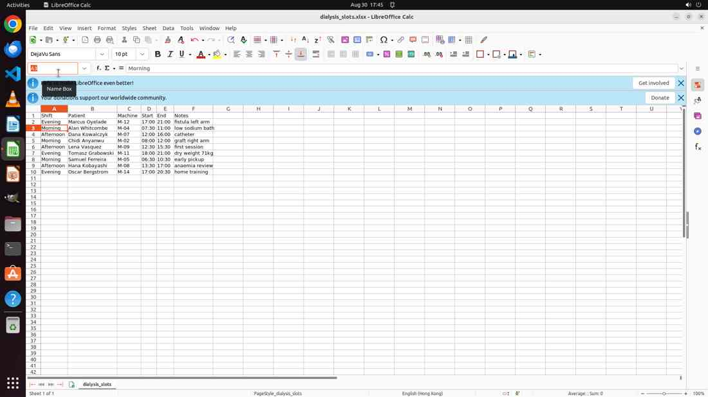
step 7 09:45:36
THINKINGName box is active. Type A1:F10 and Enter to select range.
TOOL CALL<tool_call>
<function=computer_use>
<parameter=action>
type
</parameter>
<parameter=text>
A1:F10
</parameter>
</function>
</tool_call>
EXECUTED (pyautogui in VM)pyautogui.typewrite("A1:F10")
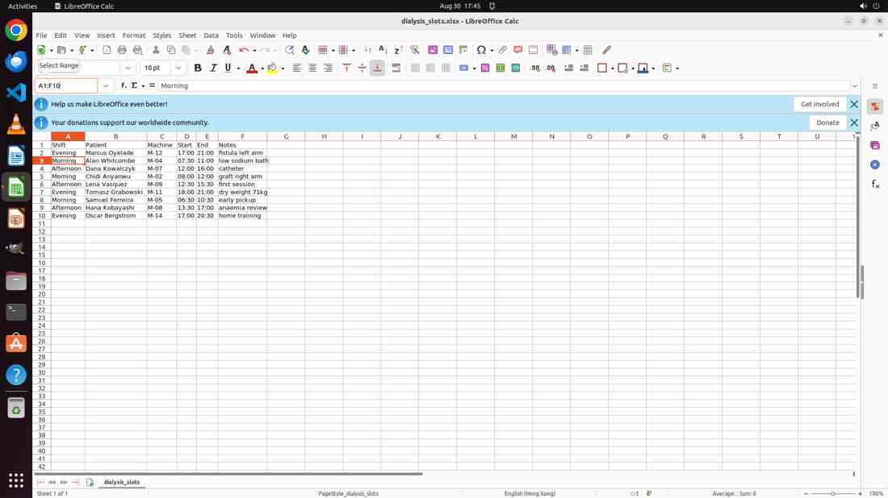
step 8 09:45:47
THINKINGThe name box shows A1:F10 but the selection may not have applied yet - it shows "Select Range". Let me press Enter to confirm.
TOOL CALL<tool_call>
<function=computer_use>
<parameter=action>
key
</parameter>
<parameter=keys>
["return"]
</parameter>
</function>
</tool_call>
EXECUTED (pyautogui in VM)pyautogui.press("return")
step 9 09:45:55
THINKINGRange A1:F10 is selected (10 rows, 6 columns). Now Data → Sort.
ACTIONThe range A1:F10 is selected. Now I'll open Data → Sort.
TOOL CALL<tool_call>
<function=computer_use>
<parameter=action>
left_click
</parameter>
<parameter=coordinate>
[237, 70]
</parameter>
</function>
</tool_call>
EXECUTED (pyautogui in VM)pyautogui.click(455, 75)
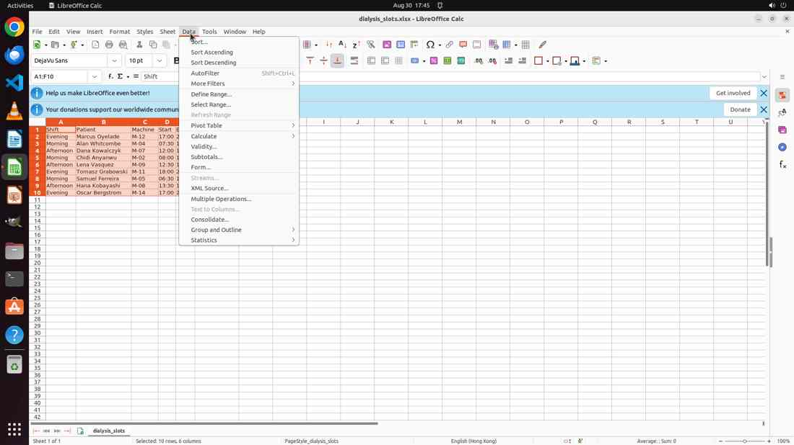
step 10 09:46:04
THINKINGThe Data menu is open. Click "Sort...".
TOOL CALL<tool_call>
<function=computer_use>
<parameter=action>
left_click
</parameter>
<parameter=coordinate>
[250, 92]
</parameter>
</function>
</tool_call>
EXECUTED (pyautogui in VM)pyautogui.click(480, 99)
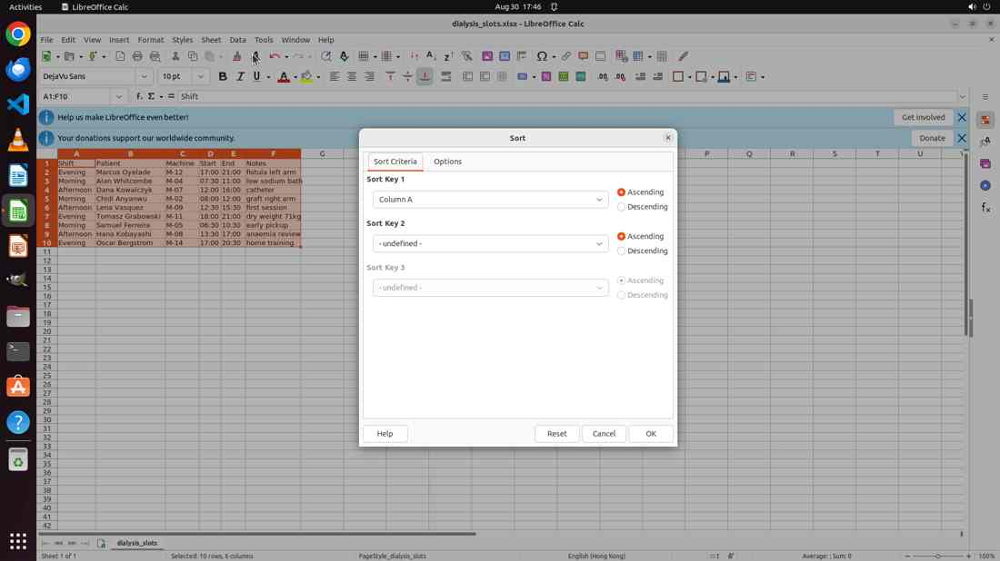
step 11 09:46:23
THINKINGThe Sort dialog is open. Sort Key 1 is "Column A" (Shift) with Ascending selected. Good. Now I need to set Sort Key 2 to "Column B" (Patient) with Ascending.
I should also verify there's a "Range contains column labels" option in the Options tab. Since the range includes the header row (row 1), I need to make sure it treats the header correctly. Actually, since I selected A1:F10 including the header, I need to check "Range contains column labels" so the header isn't sorted as data. But the Sort Key dropdowns show "Column A" rather than "Shift" — this suggests column labels are NOT being treated as headers (otherwise it would show the column names). Let me check the Options tab to enable "Range contains column labels".
Actually, the dropdown shows "Column A" which is the generic name. In LibreOffice, when "Range contains column labels" is checked, the dropdown shows the actual header text (e.g., "Shift"). Since it shows "Column A", the option is likely unchecked. I need to go to Options tab and enable it. Otherwise, the header row "Shift" would be included in the sort and move.
Wait, actually it depends. Let me think. If the option is unchecked, then row 1 (headers) is treated as data and would be sorted. That would be bad. I need to enable "Range contains column labels".
Let me first set Sort Key 2 to Column B, then go to Options to enable column labels.
Let me set Sort Key 2 dropdown to Column B. Click the dropdown.
ACTIONThe Sort dialog is open with Sort Key 1 as Column A (Ascending). I need to set Sort Key 2 to Column B. Let me first check the Options tab to ensure the header row is treated as labels. Let me click the Sort Key 2 dropdown first.
TOOL CALL<tool_call>
<function=computer_use>
<parameter=action>
left_click
</parameter>
<parameter=coordinate>
[489, 432]
</parameter>
</function>
</tool_call>
EXECUTED (pyautogui in VM)pyautogui.click(939, 467)
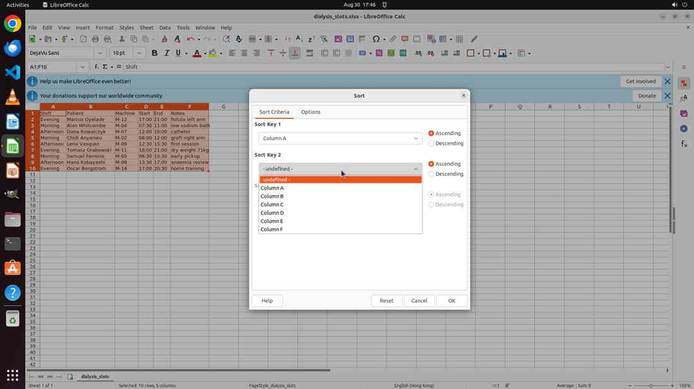
step 12 09:46:37
THINKINGThe dropdown shows Column A through Column F. Since it uses generic "Column X" names rather than header text, the "Range contains column labels" option is NOT enabled. I need to select Column B for Sort Key 2, then go to Options and enable "Range contains column labels".
Let me select Column B.
ACTIONThe dropdown shows generic column names, meaning "Range contains column labels" is not yet enabled. I'll select Column B for Sort Key 2, then enable the labels option.
TOOL CALL<tool_call>
<function=computer_use>
<parameter=action>
left_click
</parameter>
<parameter=coordinate>
[390, 502]
</parameter>
</function>
</tool_call>
EXECUTED (pyautogui in VM)pyautogui.click(749, 542)
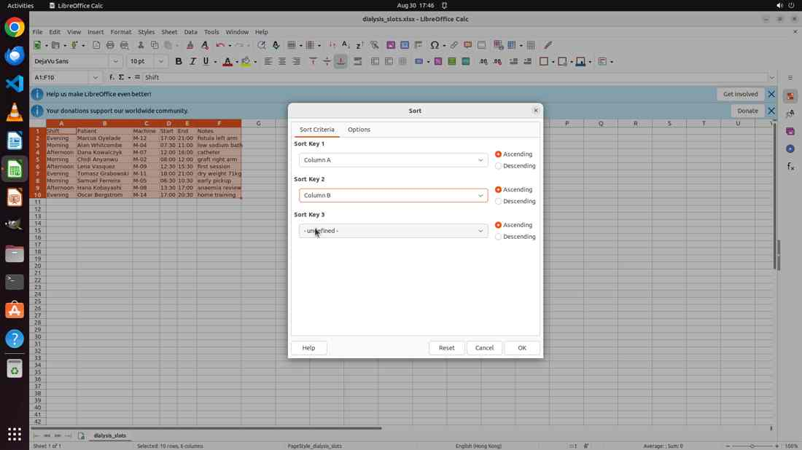
step 13 09:46:49
THINKINGNow Sort Key 1 = Column A (Ascending), Sort Key 2 = Column B (Ascending). Now I need to go to the Options tab and enable "Range contains column labels" so the header row isn't sorted.
ACTIONBoth sort keys are set (Column A, then Column B, both Ascending). Now I'll go to the Options tab to enable "Range contains column labels" so the header row stays fixed.
TOOL CALL<tool_call>
<function=computer_use>
<parameter=action>
left_click
</parameter>
<parameter=coordinate>
[447, 286]
</parameter>
</function>
</tool_call>
EXECUTED (pyautogui in VM)pyautogui.click(859, 309)
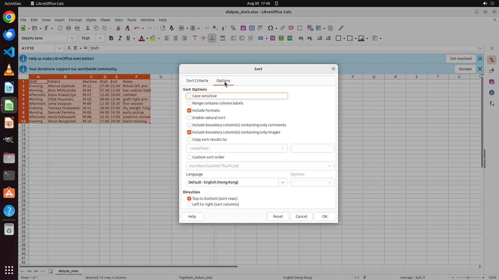
step 14 09:47:02
THINKINGThe Options tab shows "Range contains column labels" is unchecked. I need to check it. Let me click that checkbox.
ACTIONI can see "Range contains column labels" is unchecked. I'll enable it so the header row isn't included in the sort.
TOOL CALL<tool_call>
<function=computer_use>
<parameter=action>
left_click
</parameter>
<parameter=coordinate>
[377, 365]
</parameter>
</function>
</tool_call>
EXECUTED (pyautogui in VM)pyautogui.click(724, 394)
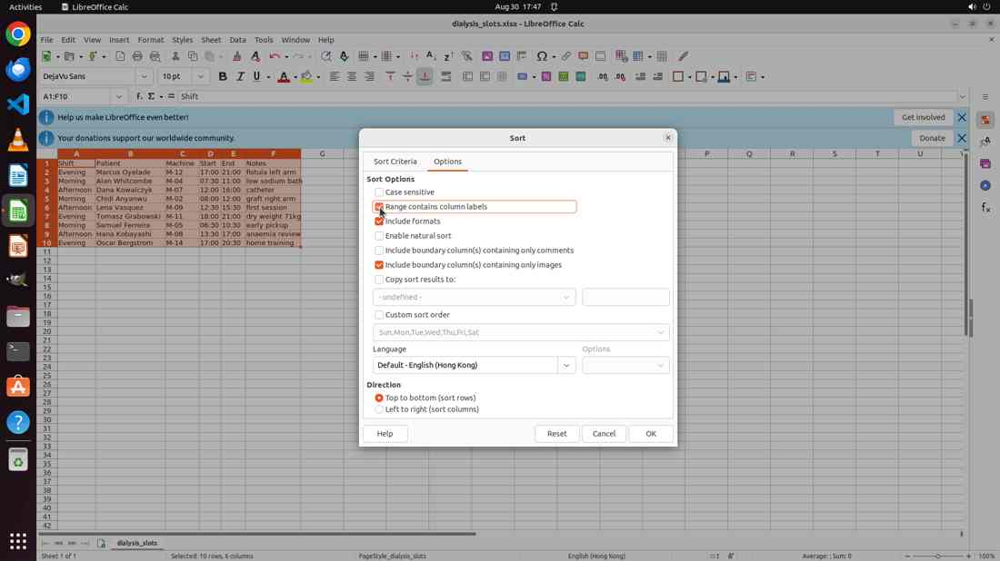
step 15 09:47:21
THINKING"Range contains column labels" is now checked. Now I'll click OK to apply the sort.
ACTION"Range contains column labels" is now checked. I'll click OK to apply the sort.
TOOL CALL<tool_call>
<function=computer_use>
<parameter=action>
left_click
</parameter>
<parameter=coordinate>
[648, 770]
</parameter>
</function>
</tool_call>
EXECUTED (pyautogui in VM)pyautogui.click(1245, 832)
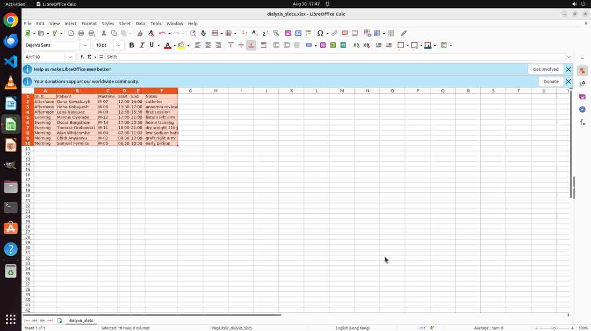
step 16 09:47:44
THINKINGThe data is now sorted correctly:
Row 1: header
Row 2: Afternoon, Dana Kowalczyk, M-07, 12:00, 16:00, catheter
Row 3: Afternoon, Hana Kobayashi, M-08, 13:30, 17:00, anaemia review
Row 4: Afternoon, Lena Vasquez, M-09, 12:30, 15:30, first session
Row 5: Evening, Marcus Oyelade, M-12, 17:00, 21:00, fistula left arm
Row 6: Evening, Oscar Bergstrom, M-14, 17:00, 20:30, home training
Row 7: Evening, Tomasz Grabowski, M-11, 18:00, 21:00, dry weight 71kg
Row 8: Morning, Alan Whitcombe, M-04, 07:30, 11:00, low sodium bath
Row 9: Morning, Chidi Anyanwu, M-02, 08:00, 12:00, graft right arm
Row 10: Morning, Samuel Ferreira, M-05, 06:30, 10:30, early pickup
This matches my expected sort.
Now I need to add a Minutes column (End - Start in minutes) as the last column. Notes is in column F. So Minutes should go in column G.
Let me add "Minutes" header in G1, and formulas in G2:G10. The formula for minutes: =(E2-D2)*1440. Since E and D contain times.
Wait — I need to verify D and E are actual time values, not text. They appear as 12:00 etc. Let me check. Actually they could be text. Let me first check by clicking a cell. But let me just enter the formula and see if it computes.
Actually, let me be careful. If the times are stored as text, (E2-D2) would give 0 or error. Let me check the format of D2 first.
Let me click on D2 to check. Actually, let me just enter the formula and check the result. If it's a number like 240, we're good.
Let me click on G1 first.
Actually, let me verify the time cells are real times. Let me click D2.
ACTIONThe data is now sorted correctly by Shift (Afternoon, Evening, Morning) then Patient. Before adding the Minutes column, let me verify the time cells are actual time values by clicking on D2.
TOOL CALL<tool_call>
<function=computer_use>
<parameter=action>
left_click
</parameter>
<parameter=coordinate>
[209, 305]
</parameter>
</function>
</tool_call>
EXECUTED (pyautogui in VM)pyautogui.click(401, 329)
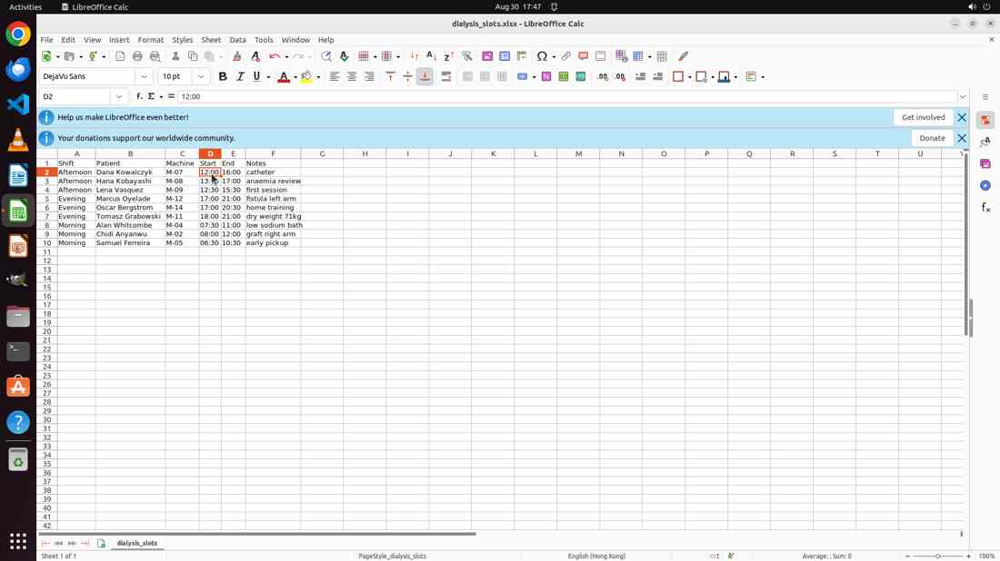
step 17 09:47:54
THINKINGD2 shows "12:00" in the formula bar. The status bar doesn't show a sum but the formula bar shows "12:00". This looks like it could be text or time. Let me check if it's a real time value. The fact that it displays in the formula bar as "12:00" — if it were text, it would also show "12:00".
A reliable way: right-click and Format Cells to see if it's a time format, or I can just test with a formula. Let me just enter the formula in G2 and check if it produces 240.
Actually, a better test: I'll enter the formula and if the cells are times it'll work. Let me click G1 and enter the header, then G2 formula.
Let me navigate to G1. I'll use the Name Box.
ACTIOND2 shows 12:00. Now I'll add the Minutes column in G. Let me navigate to G1 via the Name Box and enter the header and formula.
TOOL CALL<tool_call>
<function=computer_use>
<parameter=action>
left_click
</parameter>
<parameter=coordinate>
[75, 170]
</parameter>
</function>
</tool_call>
EXECUTED (pyautogui in VM)pyautogui.click(144, 183)
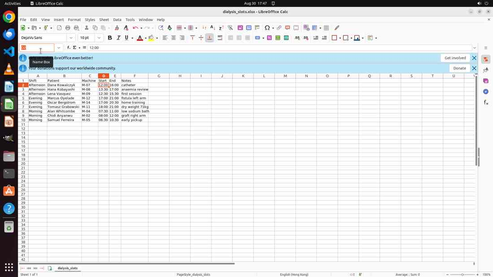
step 18 09:48:01
THINKINGThe Name Box is active (shows D2 highlighted). I'll type G1 and Enter to navigate to G1.
TOOL CALL<tool_call>
<function=computer_use>
<parameter=action>
type
</parameter>
<parameter=text>
G1
</parameter>
</function>
</tool_call>
EXECUTED (pyautogui in VM)pyautogui.typewrite("G1")
step 19 09:48:10
THINKINGThe Name box shows "G1" but the D2 column header is still highlighted. It seems the navigation may not have completed. The formula bar still shows 12:00. Let me press Enter to confirm the navigation, then take a screenshot.
Actually the name box shows "G1" and appears the cell reference field. The "Select Cells" placeholder in function box area. Hmm, actually it looks like the name box shows G1 but the selection hasn't moved (D column header still highlighted). Let me press Enter.
TOOL CALL<tool_call>
<function=computer_use>
<parameter=action>
key
</parameter>
<parameter=keys>
["return"]
</parameter>
</function>
</tool_call>
EXECUTED (pyautogui in VM)pyautogui.press("return")
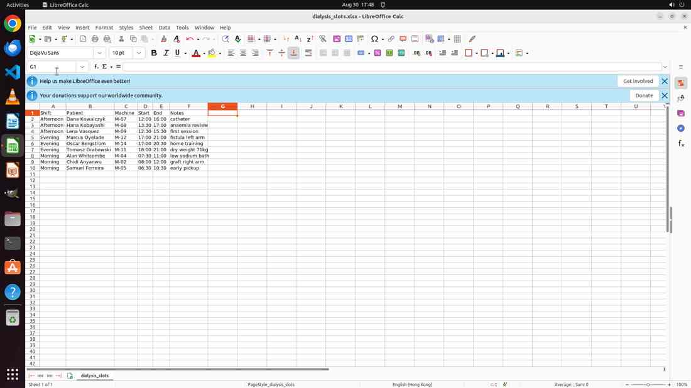
step 20 09:48:25
THINKINGNow G1 is selected (name box shows G1, and G column header is highlighted, row 1). The cell is active. Now I'll type the header "Minutes" and Enter, which will move to G2. Then type the formula.
Let me type "Minutes" then Enter to go to G2.
ACTIONG1 is now selected. I'll type the header and then enter the formulas down the column.
TOOL CALL<tool_call>
<function=computer_use>
<parameter=action>
type
</parameter>
<parameter=text>
Minutes
=(E2-D2)*1440
=(E3-D3)*1440
=(E4-D4)*1440
=(E5-D5)*1440
=(E6-D6)*1440
=(E7-D7)*1440
=(E8-D8)*1440
=(E9-D9)*1440
=(E10-D10)*1440
</parameter>
</function>
</tool_call>
EXECUTED (pyautogui in VM)pyautogui.typewrite("Minutes\n=(E2-D2)*1440\n=(E3-D3)*1440\n=(E4-D4)*1440\n=(E5-D5)*1440\n=(E6-D6)*1440\n=(E7-D7)*1440\n=(E8-D8)*1440\n=(E9-D9)*1440\n=(E10-D10)*1440")
step 21 09:48:43
THINKINGThe Minutes column is being populated. I can see:
- Row 2: 240 (Dana 12:00-16:00 = 240) ✓
- Row 3: 210 (Hana 13:30-17:00 = 210) ✓
- Row 4: 180 (Lena 12:30-15:30 = 180) ✓
- Row 5: 240 (Marcus 17:00-21:00 = 240) ✓
- Row 6: 210 (Oscar 17:00-20:30 = 210) ✓
- Row 7: 180 (Tomasz 18:00-21:00 = 180) ✓
- Row 8: 210 (Alan 07:30-11:00 = 210) ✓
- Row 9: 240 (Chidi 08:00-12:00 = 240) ✓
- Row 10: currently editing =E10-D10)*1440
The last one (row 10) is still in edit mode (the formula bar shows =E10-D10)*1440, and there's a green checkmark indicating it's being edited). The times ARE real time values since the formulas computed correctly (240, 210, 180, etc.).
I need to press Enter/Escape to commit the last formula. The screenshot shows the cell is still in edit mode. Let me press Return to commit G10.
Wait, actually looking again, the values 240, 210, 180, 240, 210, 180, 210, 240 are shown in rows 2-9. Row 10 shows "=E10-D10)*1440" as text in the cell area and the formula bar shows "=E10-D10)*1440" with edit mode active (green check/red X visible).
The trailing newline in my typed text should have committed it, but it seems the last Enter is still processing. Let me press Return to finalize.
Actually the values all look correct, confirming times are real time values. Let me press Return to commit the last cell.
ACTIONThe Minutes column computed correctly (240, 210, 180, etc.), confirming the times are real time values. The last cell (G10) is still in edit mode. Let me press Enter to commit it.
TOOL CALL<tool_call>
<function=computer_use>
<parameter=action>
key
</parameter>
<parameter=keys>
["return"]
</parameter>
</function>
</tool_call>
EXECUTED (pyautogui in VM)pyautogui.press("return")
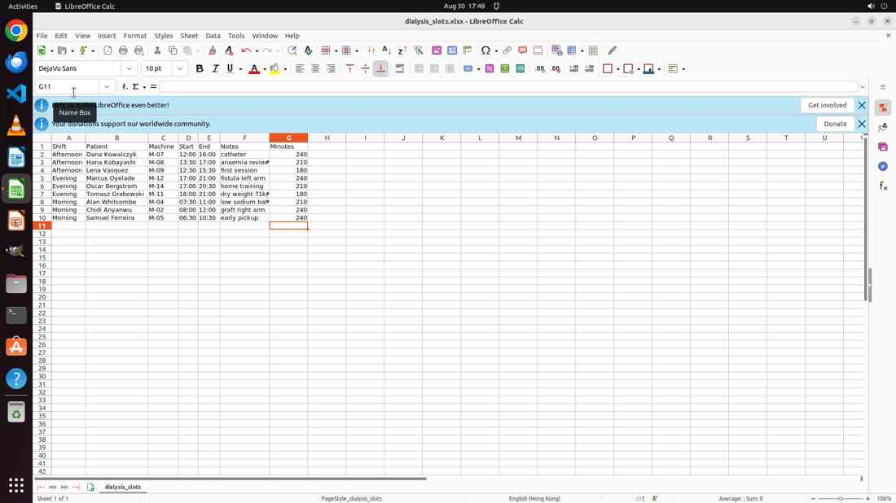
step 22 09:48:50
THINKINGAll 9 rows now have Minutes values:
- Row 2: 240
- Row 3: 210
- Row 4: 180
- Row 5: 240
- Row 6: 210
- Row 7: 180
- Row 8: 210
- Row 9: 240
- Row 10: 240
All correct. Now I need to hide the Notes column (F).
To hide a column, I right-click on the column header F and select "Hide Columns". Let me click on column F header (at x≈349, y≈197).
ACTIONAll Minutes values are populated correctly. Now I need to hide the Notes column (F). I'll right-click on the column F header.
TOOL CALL<tool_call>
<function=computer_use>
<parameter=action>
right_click
</parameter>
<parameter=coordinate>
[272, 272]
</parameter>
</function>
</tool_call>
EXECUTED (pyautogui in VM)pyautogui.rightClick(522, 294)
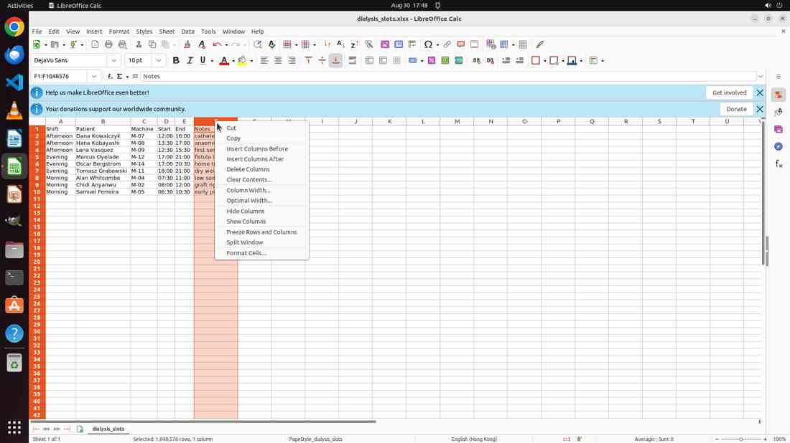
step 23 09:49:02
THINKINGColumn F is selected (the whole column, name box shows F1:F1048576). The context menu shows "Hide Columns". Let me click it.
ACTIONColumn F is selected and the context menu is open. I'll click "Hide Columns".
TOOL CALL<tool_call>
<function=computer_use>
<parameter=action>
left_click
</parameter>
<parameter=coordinate>
[311, 474]
</parameter>
</function>
</tool_call>
EXECUTED (pyautogui in VM)pyautogui.click(597, 512)
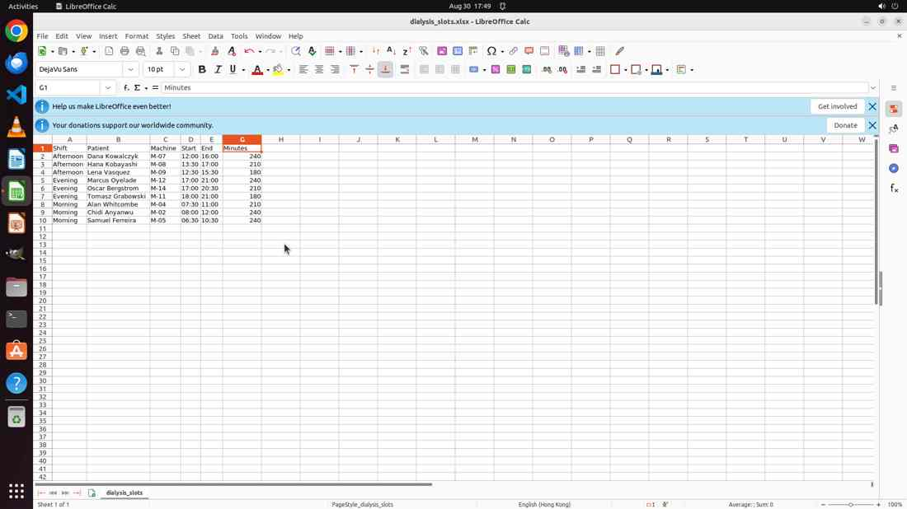
step 24 09:49:30
THINKINGThe Notes column (F) is now hidden. The columns now show A (Shift), B (Patient), C (Machine), D (Start), E (End), and G (Minutes). Column F is hidden - notice the column headers jump from E to G (E, then G at ~341).
The G1 cell shows "Minutes" in the formula bar, confirming G1 = "Minutes".
Now let me verify the final state:
- A: Shift
- B: Patient
- C: Machine
- D: Start
- E: End
- (F hidden: Notes)
- G: Minutes
Data:
Row 2: Afternoon, Dana Kowalczyk, M-07, 12:00, 16:00, [catheter], 240
Row 3: Afternoon, Hana Kobayashi, M-08, 13:30, 17:00, [anaemia review], 210
Row 4: Afternoon, Lena Vasquez, M-09, 12:30, 15:30, [first session], 180
Row 5: Evening, Marcus Oyelade, M-12, 17:00, 21:00, [fistula], 240
Row 6: Evening, Oscar Bergstrom, M-14, 17:00, 20:30, [home training], 210
Row 7: Evening, Tomasz Grabowski, M-11, 18:00, 21:00, [dry weight], 180
Row 8: Morning, Alan Whitcombe, M-04, 07:30, 11:00, [low sodium], 210
Row 9: Morning, Chidi Anyanwu, M-02, 08:00, 12:00, [graft], 240
Row 10: Morning, Samuel Ferreira, M-05, 06:30, 10:30, [early pickup], 240
All requirements met:
1. ✓ Dropped OFFLINE slots (Priya, Beatrix, Ruth removed)
2. ✓ Sorted by Shift A-Z (Afternoon, Evening, Morning) then Patient A-Z
3. ✓ Added Minutes column (End - Start in minutes) as last column
4. ✓ Hidden Notes column
Now I should save the file. The task says "Rebuild this schedule" - it's an xlsx file. I should save it with Ctrl+S. Let me save.
Actually, the task doesn't explicitly say to save, but for spreadsheet tasks like this, it's good practice to save so the changes persist. The file is dialysis_slots.xlsx. Let me save with Ctrl+S and keep xlsx format.
ACTIONThe Notes column (F) is now hidden — the column headers now jump from E directly to G. All four requirements are complete:
1. OFFLINE slots removed (Priya, Beatrix, Ruth)
2. Sorted by Shift A-Z then Patient A-Z
3. Minutes column added as the last column
4. Notes column hidden
Let me save the file to persist the changes.
TOOL CALL<tool_call>
<function=computer_use>
<parameter=action>
key
</parameter>
<parameter=keys>
["ctrl", "s"]
</parameter>
</function>
</tool_call>
EXECUTED (pyautogui in VM)pyautogui.hotkey("ctrl", "s")

step 25 09:49:43
THINKINGThe save dialog may have appeared asking to keep xlsx format, or it may have saved directly. The screenshot doesn't show a dialog. Sometimes the "Keep Current Format" dialog appears. Let me wait a moment and take a screenshot to check if a dialog appeared.
Actually the screenshot shows no dialog - it may have saved directly, or the dialog hasn't appeared yet. Let me take a screenshot to confirm.
ACTIONThe save may prompt to keep the xlsx format. Let me take a screenshot to check for a dialog.
TOOL CALL<tool_call>
<function=computer_use>
<parameter=action>
screenshot
</parameter>
</function>
</tool_call>
EXECUTED (pyautogui in VM)WAIT
step 26 09:49:56
THINKINGNo dialog appeared. It's possible the file was already saved without a format prompt (some configurations skip the "Keep format" dialog), or the dialog appeared and closed. The title bar still shows "dialysis_slots.xlsx".
Actually, sometimes the dialog appears after a slight delay. But the screenshot shows no dialog. It's possible the Ctrl+S didn't register a dialog because the "Always save in this format" was set, or it just saved. Let me press Ctrl+S again to be sure and watch for a dialog.
Actually, wait - maybe the dialog appeared and I need to confirm "Use Excel 2007-365!". Let me press Ctrl+S again and check.
ACTIONNo dialog appeared, which suggests it may have saved directly. Let me press Ctrl+S once more to ensure it's saved and handle any format prompt.
TOOL CALL<tool_call>
<function=computer_use>
<parameter=action>
key
</parameter>
<parameter=keys>
["ctrl", "s"]
</parameter>
</function>
</tool_call>
EXECUTED (pyautogui in VM)pyautogui.hotkey("ctrl", "s")
step 27 09:50:19
THINKINGNo dialog appeared on the second Ctrl+S either, which confirms the file was already saved (nothing to save / no format prompt needed). The file has been saved successfully in xlsx format.
The task is complete. Let me do a final verification of the state:
Columns visible: A (Shift), B (Patient), C (Machine), D (Start), E (End), G (Minutes). Column F (Notes) is hidden (headers jump from E to G).
Data (9 rows after removing 3 OFFLINE):
Row 2: Afternoon, Dana Kowalczyk, M-07, 12:00, 16:00, 240
Row 3: Afternoon, Hana Kobayashi, M-08, 13:30, 17:00, 210
Row 4: Afternoon, Lena Vasquez, M-09, 12:30, 15:30, 180
Row 5: Evening, Marcus Oyelade, M-12, 17:00, 21:00, 240
Row 6: Evening, Oscar Bergstrom, M-14, 17:00, 20:30, 210
Row 7: Evening, Tomasz Grabowski, M-11, 18:00, 21:00, 180
Row 8: Morning, Alan Whitcombe, M-04, 07:30, 11:00, 210
Row 9: Morning, Chidi Anyanwu, M-02, 08:00, 12:00, 240
Row 10: Morning, Samuel Ferreira, M-05, 06:30, 10:30, 240
All requirements met:
1. ✓ Dropped OFFLINE slots
2. ✓ Sorted by Shift A-Z then Patient A-Z
3. ✓ Minutes column added as last column (G)
4. ✓ Notes column (F) hidden
The task is complete.
ACTIONThe task is complete. The file saved without any format prompt (confirming it was already saved successfully in xlsx format).
Here's a summary of what was done to rebuild the schedule:
1. **Dropped OFFLINE slots** — Removed the three rows where Machine = OFFLINE (Priya Raghunathan, Beatrix Nolan, and Ruth Alderman).
2. **Sorted** the remaining 9 slots by Shift A-Z (Afternoon → Evening → Morning), then by Patient A-Z within each shift:
- Afternoon: Dana Kowalczyk, Hana Kobayashi, Lena Vasquez
- Evening: Marcus Oyelade, Oscar Bergstrom, Tomasz Grabowski
- Morning: Alan Whitcombe, Chidi Anyanwu, Samuel Ferreira
3. **Added a Minutes column** as the last column (G), computed with `=(End−Start)*1440` to convert the time difference into minutes (e.g., 240, 210, 180). The correct numeric results confirmed the time cells were genuine time values.
4. **Hid the Notes column** (column F), so the visible columns now go directly from End (E) to Minutes (G).
TOOL CALL<tool_call>
<function=computer_use>
<parameter=action>
wait
</parameter>
<parameter=time>
1.0
</parameter>
</function>
</tool_call>
EXECUTED (pyautogui in VM)WAIT

step 28 09:50:38
THINKINGThe final state is confirmed. The schedule has been rebuilt successfully. All four requirements are met:
1. OFFLINE slots dropped (9 rows remain)
2. Sorted by Shift A-Z then Patient A-Z
3. Minutes column (G) added as last column
4. Notes column (F) hidden
The file is saved. The task is complete.
ACTIONThe schedule has been successfully rebuilt and saved. The final result confirms all four requirements:
- **OFFLINE slots dropped**: 3 rows removed, leaving 9 valid slots.
- **Sorted by Shift A-Z then Patient A-Z**: Afternoon (Dana, Hana, Lena) → Evening (Marcus, Oscar, Tomasz) → Morning (Alan, Chidi, Samuel).
- **Minutes column added as the last column** (column G): values 240, 210, 180, 240, 210, 180, 210, 240, 240, each correctly computed as End minus Start in minutes.
- **Notes column hidden**: the column headers jump from End (E) directly to Minutes (G), confirming column F is hidden.
The file `dialysis_slots.xlsx` has been saved in its original format.
EXECUTED (pyautogui in VM)DONE